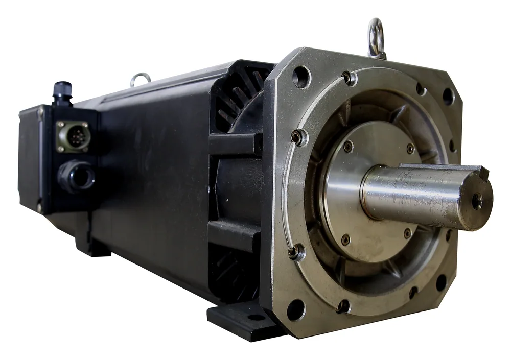
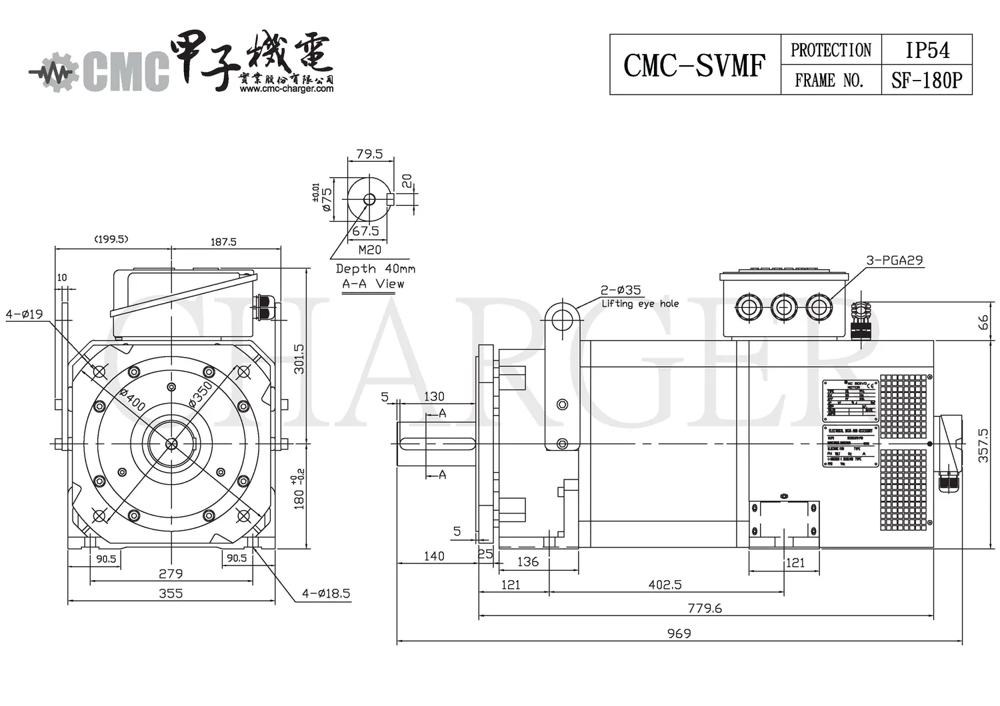

SVMF系列 IP54 SF-180P交流伺服向量馬達
SVMF IP54 交流伺服向量馬達，機框 SF-180P，額定輸出 18.5–55 kW。

- 產品代碼
- SVMF-IP54_SF-180P
- 類別
- 交流伺服馬達
- 品牌
- Charger Mechatronic (CMC)
- 系列
- SVMF IP54
- 機框
- SF-180P
- 額定輸出
- 18.5–55 kW
- 額定轉矩
- 348–350.2 N·m
- 最高轉速
- 3000–3500 RPM
規格
| Product Series | Rated Speed(RPM) | Rated Output(kW) | Rated Voltage(V) | Rated Current(A) | Rated Torque(N-m) | Rated Torque(Kg-m) | Rotor Inertia(Kg-m²) | Max. Speed(RPM) | Frame Size |
|---|---|---|---|---|---|---|---|---|---|
| SVMF IP54 | 500 | 18.5 | 360 | 42 | 350.2 | 36 | 0.5463 | 3500 | SF-180P |
| SVMF IP54 | 1000 | 37 | 360 | 79.8 | 350.2 | 36 | 0.5463 | 3500 | SF-180P |
| SVMF IP54 | 1500 | 55 | 380 | 115 | 348 | 35.8 | 0.5463 | 3000 | SF-180P |
規格表依甲子機電原廠資料，以英文呈現。
外形尺寸圖


點選圖面可開啟原尺寸圖檔。單位：mm。
詢價或請工程師協助選型
服務時間：週一至週五（越南時間）。可用越南文、中文、英文溝通。